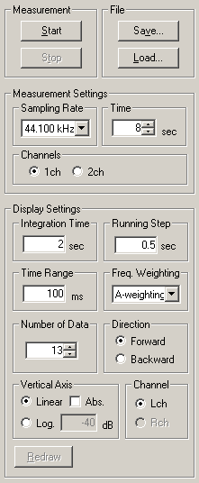

DSSF3 > RA > Running ACF > Measurement guide
 |
Sampling Rate 48 kHz or 44.1 kHz is recommended. If your soundcard is the latest, 96 kHz may also be available. |
| Time Set the measurement time of the ACF in second. By clicking up and down button, it can be specified between 1 and 30 s. Generally it should be set below 10 seconds. Longer measurement time can be set by entering the number in the box, but note that much memory is needed if you set the long measurement time. The maximum measurement time depends on the computer. |
|
| Channels Select 1ch or 2ch. To measure the CCF, select 2ch. |
|
| Integration Time Set the integration time of the ACF calculation. This value corresponds to the averaging time for calculating the sound intensity. It can be set between 0.001 and 10 s. But note that longer integration time results in the longer calculation time. |
|
| Running Step Set the calculation interval of the ACF. This value can be set between 0.001 and 10 s. Shorter the this value, the more the number of calculation. |
|
| Freq. Weighting Select the frequency weighting filter. Usually, select Flat or A-weighting. A-weighting filter roughly simulates the sensitivity curve of human ear that attenuates low and high frequencies. |
DSSF3 > RA > Running ACF > Measurement guide